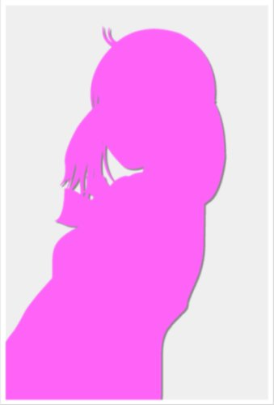
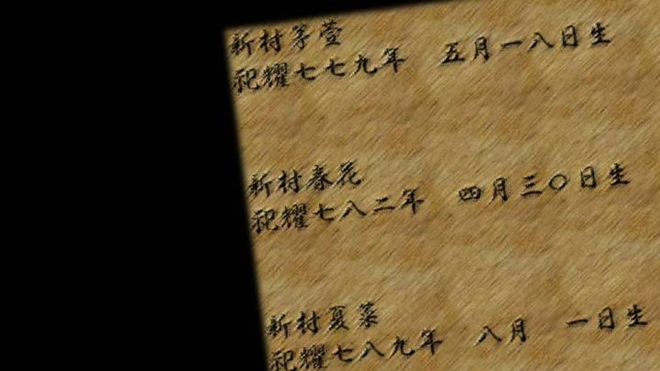
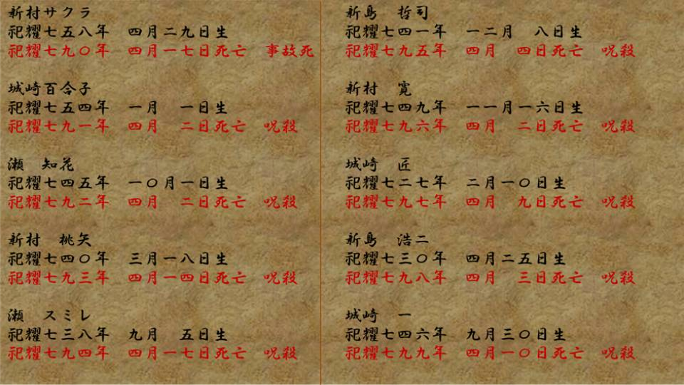
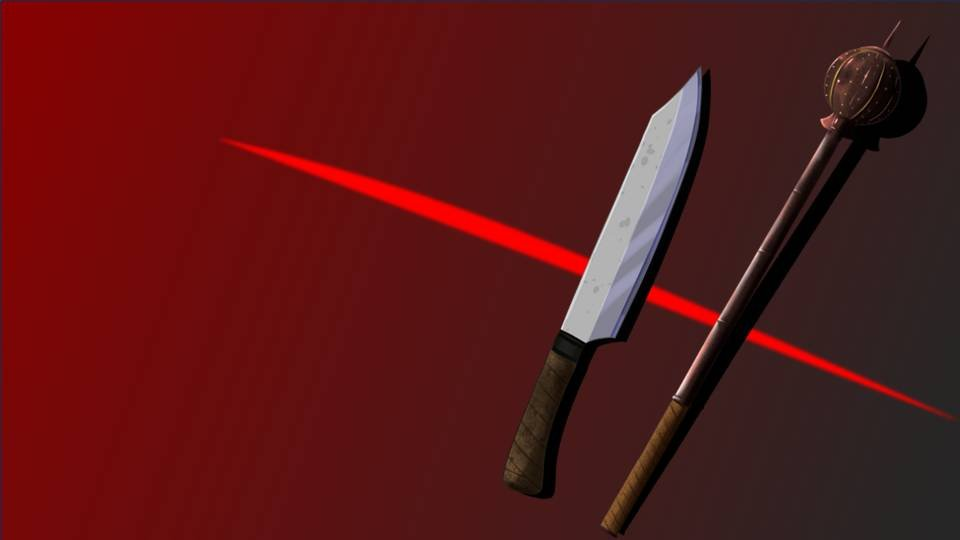
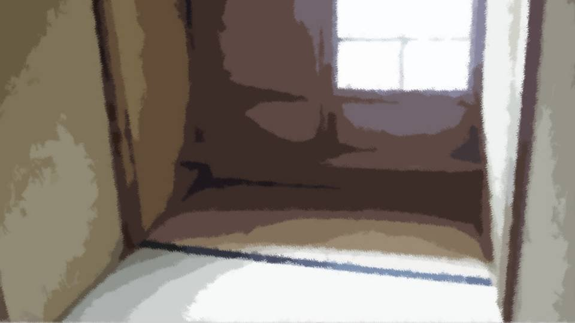
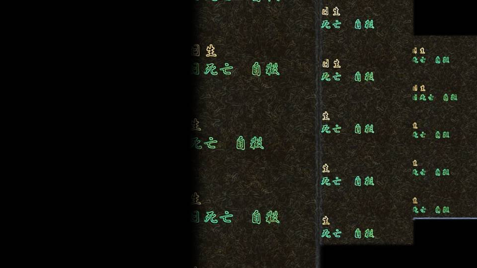
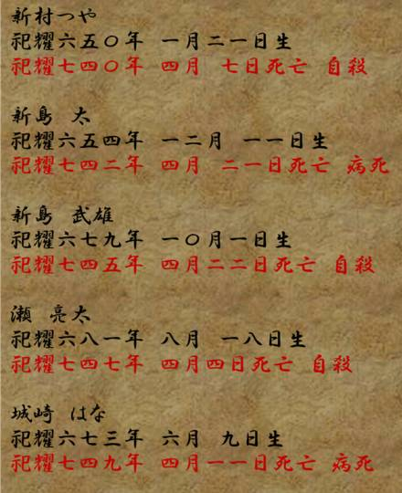

The Shigatsu Curse


"Like I said before. Sakura-san's body had its head cut off..."
Goto was writing it all down in a notepad she'd pulled out from somewhere.
Goto was writing it all down in a notepad she'd pulled out from somewhere.
"Senpai, for Sakura-san to think she had to die to atone, what kind of rule was it...
If we knew that, I think it'd go a long way toward solving this..."
"Yeah, exactly. Grandma might tell us now, though..."
"Yeah, exactly. Grandma might tell us now, though..."
"Uh... I want to ask this just as a possibility, but there isn't some endemic disease in Arata that controls people's behavior, that makes them suddenly go mad and kill themselves, is there?
Like how rabies makes you afraid of water, or how Guinea worm makes your feet feel hot so you go into the water, that kind of thing..."
"No way... I've never heard of anything like―"
"No way... I've never heard of anything like―"
"There is."
We all turned at once toward the owner of the voice.
We all turned at once toward the owner of the voice.


It was Erika-chan, done changing.

"There is. A sickness where people kill themselves..."

"G-Grandma, what's that supposed to mean! That's... the first I've heard of it!"
"Well, Haruka, I doubt you were told that much. Haruka, when is the anniversary of Eiichiro's death?"
"Well, Haruka, I doubt you were told that much. Haruka, when is the anniversary of Eiichiro's death?"

"What's this all of a sudden! It's April 8, right!?"
"Then what about the anniversary of Sakura's death?"
"April 17! What's with these questions..."
"Haruka, don't you see? What the days these two died have in common..."
"I dunno! Just that they both died in April!"
"Then what about the anniversary of Sakura's death?"
"April 17! What's with these questions..."
"Haruka, don't you see? What the days these two died have in common..."
"I dunno! Just that they both died in April!"

"Uh, Erika-chan, wait a second!
If dying in April is the thing in common, that's way too much of a stretch!
If a lot more people had died in April, I'd get it, but...
Besides, Niimura-senpai's dad didn't kill himself or anything!"
Goto objected from a statistical point of view.
Goto objected from a statistical point of view.
"Hang on a minute."
Erika-chan said that and started rummaging through the living room closet.
―What Erika-chan took out of the closet was...
―What Erika-chan took out of the closet was...
A residents' register...?
A very old book, covered in stains.
Erika-chan slowly turned its pages.
A very old book, covered in stains.
Erika-chan slowly turned its pages.

Erika-chan opened it starting from the last page.
It seemed to be written in order of birth.
The last page held three people.
Chigaya Niimura Shiyo 779 Born May 18
Haruka Niimura Shiyo 782 Born April 30
Kana Niimura Shiyo 789 Born August 1
It seemed to be written in order of birth.
The last page held three people.
Chigaya Niimura Shiyo 779 Born May 18
Haruka Niimura Shiyo 782 Born April 30
Kana Niimura Shiyo 789 Born August 1
"This has the birth and death dates of Arata's people, going back 100 years.
The page I'm showing you now lists only birth dates. The pages I'll show you next are written in order of death.
Take a good look. Once you've looked through the next pages, tell me."
（The next page will not advance until you click.）
（The next page will not advance until you click.）

"What? This curse-killing..."
Is this the suicide thing she mentioned?
Is this the suicide thing she mentioned?
"Curse-killing is Arata slang for murder.
It means someone killed them."
No way!
In this Arata settlement, since Shiyo 791― one person has been killed every year, for 9 years!?
No way!
In this Arata settlement, since Shiyo 791― one person has been killed every year, for 9 years!?
"Grandma, this is the first I've heard of this!
So that means somebody's gonna get killed this year too!? Who's the culprit!"
Haruka's body was trembling.
Haruka is one of Arata's people too. No wonder she's scared.
Haruka's body was trembling.
Haruka is one of Arata's people too. No wonder she's scared.
"We don't know who the culprit is... But I want to stop it.
And for that, I need the help of Natsumi-chan and the rest of you..."
It should have nothing to do with me or Goto, living in Motoki-cho, but something we could help with...
It should have nothing to do with me or Goto, living in Motoki-cho, but something we could help with...
"Uh, is it definitely murder? What about an accident, or for that matter, suicide...?"
"No, any way you look at it, it was murder. Because every one of them had their head crushed. Probably with a blunt weapon, in one blow."
"One blow...? Killing someone with one blow from a blunt weapon is pretty hard, isn't it?"
"Thing is, they were struck like it was sheer brute force. After all, their heads were smashed to a pulp in a single blow."
"No, any way you look at it, it was murder. Because every one of them had their head crushed. Probably with a blunt weapon, in one blow."
"One blow...? Killing someone with one blow from a blunt weapon is pretty hard, isn't it?"
"Thing is, they were struck like it was sheer brute force. After all, their heads were smashed to a pulp in a single blow."
"Destroying a human head in one blow... that's impossible with ordinary strength..."
"Why do you know that kind of stuff, Goto..."
"The human skull is harder than you'd imagine. Niimura-senpai, even if you used that mace from earlier, to hit someone hard enough that they'd clearly be dead, you'd have to hit them over and over―"
"Okay, okay, I get it! I don't wanna hear any more!"
"I don't want to hear any more either..."
"Why do you know that kind of stuff, Goto..."
"The human skull is harder than you'd imagine. Niimura-senpai, even if you used that mace from earlier, to hit someone hard enough that they'd clearly be dead, you'd have to hit them over and over―"
"Okay, okay, I get it! I don't wanna hear any more!"
"I don't want to hear any more either..."
"Like Erina-chan says, it's not something an ordinary person could pull off.
The only way I can see it, someone very practiced beat them while holding their head in place."
"Then maybe they attacked them in their sleep?"
"No, the incidents happened day or night alike, so I doubt it."
Every one of them with their head crushed, and in a way no ordinary person could manage.
And 9 years in a row of that... is the culprit even human...?
"Then maybe they attacked them in their sleep?"
"No, the incidents happened day or night alike, so I doubt it."
Every one of them with their head crushed, and in a way no ordinary person could manage.
And 9 years in a row of that... is the culprit even human...?
Come to think of it, Erika-chan had said they used to make a doping drug here long ago.
If someone was using it, then maybe a crime like that is possible.
If someone was using it, then maybe a crime like that is possible.
"Don't you remember, Natsumi-chan, any of you? The murder case that was about to happen in Megasawa."
"What's that supposed to mean...! There's no way we'd know! We were only in the early grades of elementary school!"
"I see... I suppose you wouldn't remember..."
"What's that supposed to mean...! There's no way we'd know! We were only in the early grades of elementary school!"
"I see... I suppose you wouldn't remember..."
"If it's about that, I'll explain it myself."

Out of the kitchen came Obasan.

"Mom..."
Obasan sat down right in front of us.
Obasan sat down right in front of us.
"The reason this whole series of murders happened...
is because of me."
"Huh!? What do you mean! Don't tell me you did it, Mom!?"
"Haruka, do you remember? When you made the cursed paper dolls."
"Huh!? What do you mean! Don't tell me you did it, Mom!?"
"Haruka, do you remember? When you made the cursed paper dolls."
"That's...!
I remember... Only vaguely, but the ones who bullied me..."
Obasan began to talk about the murder case that had been about to happen in Megasawa City.
As I listened, I vaguely remembered that time.
As I listened, I vaguely remembered that time.
"I don't remember it at all... I dunno if it's because I hit my head...
But how does that connect to the murders here in Arata..."
Silent the whole time, Goto was taking notes with a serious face.
Silent the whole time, Goto was taking notes with a serious face.
"The one who helped me back in Megasawa was...
Sakura-san..."

"Sakura-san did...!?"
"Sakura-san came all the way to Megasawa at my request, and I asked her if there was a way to get rid of the two who were bullying Haruka. And then..."
"Sakura-san came all the way to Megasawa at my request, and I asked her if there was a way to get rid of the two who were bullying Haruka. And then..."


"You've been through so much...
Haruka... wanting to do something for her, I understand that feeling well too.
But murder over it is wrong, all right?"
"Sakura-san, I won't cause you any trouble at all. All I need is for you to get the things ready. The rest, I'll..."
"............"
"Sakura-san, I won't cause you any trouble at all. All I need is for you to get the things ready. The rest, I'll..."
"............"
But Sakura-san wouldn't agree, right to the end.
For someone who kept Arata's rule more faithfully than anyone, as Sakura-san did, maybe this request was impossible.
For someone who kept Arata's rule more faithfully than anyone, as Sakura-san did, maybe this request was impossible.
But a while after that...

Arata's weapons were sent to me: nata, maces, Noh masks, and drugs.
And a letter enclosed with them.
And a letter enclosed with them.
Mifuyu-chan,
I have gathered what could be prepared in Arata.
The nata, maces, and Noh masks made in Arata are fine goods that trade at high prices, and of reliable quality.
There are two sets, so please put them to good use.
I have gathered what could be prepared in Arata.
The nata, maces, and Noh masks made in Arata are fine goods that trade at high prices, and of reliable quality.
There are two sets, so please put them to good use.
I was simply overjoyed.
With this, I could save Haruka.
I threatened Akane and Ryoji-san and tried to carry it out.
But in the end, partly because everyone talked me out of it, I decided against it.
With this, I could save Haruka.
I threatened Akane and Ryoji-san and tried to carry it out.
But in the end, partly because everyone talked me out of it, I decided against it.
Then I thought.
Was I going to live on from now on, sharing this secret with Sakura-san?
Sakura-san had broken the rule to send me those supplies.
Was I going to live on from now on, sharing this secret with Sakura-san?
Sakura-san had broken the rule to send me those supplies.
And what came to mind was the ghost story my mother-in-law told earlier.
I had heard that ghost story before, too.
I had heard that ghost story before, too.
Keeping it hidden would have been easy.
But I decided to tell my mother-in-law honestly.
My mother-in-law had done the same long ago, confessing to the previous Grand Witch-sama.
At the very least, I wanted to make clear that Sakura-san had done nothing wrong...
But I decided to tell my mother-in-law honestly.
My mother-in-law had done the same long ago, confessing to the previous Grand Witch-sama.
At the very least, I wanted to make clear that Sakura-san had done nothing wrong...
And then, Shiyo 790, April 17.
I went to Arata and told my mother-in-law, along with the news that we were moving to Motoki-cho.
I went to Arata and told my mother-in-law, along with the news that we were moving to Motoki-cho.

"Mifuyu-san... you do understand what you have done, do you not?
Breaking the rule is subject to punishment."
"Yes. I will take all the punishment upon myself... So, as for Sakura-san...!"
"Well... I'd say that's fine! Nothing happened, right!?"
"What? Oh, yes..."
My mother-in-law was more cheerful than I'd expected, and let the matter go lightly.
"Yes. I will take all the punishment upon myself... So, as for Sakura-san...!"
"Well... I'd say that's fine! Nothing happened, right!?"
"What? Oh, yes..."
My mother-in-law was more cheerful than I'd expected, and let the matter go lightly.
But it was right after that. It was strangely noisy outside.


Sakura-san, I heard, had gone off somewhere, crying and apologizing.
Sakura-san had overheard my confession.
My mother-in-law had no intention of blaming her for it, but she never got to hear that...
Sakura-san had overheard my confession.
My mother-in-law had no intention of blaming her for it, but she never got to hear that...

"So I as good as killed Sakura-san...
I backed Sakura-san into a corner..."
Obasan sat formally on her knees, head bowed, her shoulders shaking.
Obasan held back from murder, and that was the very reason Sakura-san died...
Obasan sat formally on her knees, head bowed, her shoulders shaking.
Obasan held back from murder, and that was the very reason Sakura-san died...
"Uh... I know this isn't the mood for it, but...
the connection to the murders of these 9 years, and Sakura-san's head being cut off...
I can't really see the connection, can you..."
It's true this story seems unrelated to Sakura-san's beheading and the 9 years of murders, or...
It's true this story seems unrelated to Sakura-san's beheading and the 9 years of murders, or...
"That's why people in the settlement are talking about Sakura's curse.
Sakura was as good as killed by the settlement's rule. They say maybe her grudge has put a curse on Arata..."
"Hold on! Then the culprit of these 9 years, couldn't it be the man whose wife was killed, Kotaro-san...!"
"Hold on! Then the culprit of these 9 years, couldn't it be the man whose wife was killed, Kotaro-san...!"
True, if you think of it as revenge on the settlement by a living person, Kotaro-san fits the profile of the culprit.
"I suspected that too...
But if so, there'd be no reason to go to the trouble of killing one a year. He could just kill them all at once.
Besides, are you saying Kotaro cut off Sakura's head?"
"That's..."
Kotaro-san being the culprit wouldn't add up either.
No... if, over the rule being broken, he couldn't forgive his wife...
"That's..."
Kotaro-san being the culprit wouldn't add up either.
No... if, over the rule being broken, he couldn't forgive his wife...
"Besides, suppose that for breaking the rule, as punishment, Kotaro-san gave Sakura-san the finishing blow. That'd be strange too.
In that case, I should have been the first target to be killed.
After all, I'm the root of it, the one who made her break the rule..."

"I see..."
Goto was staring hard at her notepad.
Goto was staring hard at her notepad.
"Uh, Erika-chan. Could it be that the reason you called us here..."
"I thought Natsumi-chan, knowing what happened in Megasawa, might be able to find a clue.
I want to stop these curse-killings. I don't want to see any more of the settlement's people die..."
"But that endemic disease that makes people kill themselves, the one you mentioned before, does it have to do with this?"
"But that endemic disease that makes people kill themselves, the one you mentioned before, does it have to do with this?"
"Right, I haven't explained that yet. Take a good look at that register.
Especially the entries from before Shiyo 790."
I traced further back with my eyes, from Shiyo 790, when Sakura-san died.
I traced further back with my eyes, from Shiyo 790, when Sakura-san died.
"............
............!?"

The causes of death lined up there...
Suicide, suicide, suicide, suicide, suicide, suicide, suicide.
Suicide, suicide, suicide, suicide, suicide, suicide, suicide.
Goosebumps and a chill spread over my whole body.
No way...! All of them suicides...?
Ojisan aside, for 30 years they all died by suicide!
No way...! All of them suicides...?
Ojisan aside, for 30 years they all died by suicide!
"Erika-chan! This 'suicide'...
is that slang too? Doesn't it mean dying of illness..."
"No, it doesn't. They really did all take their own lives..."
Haruka and Goto were both speechless.
"No, it doesn't. They really did all take their own lives..."
Haruka and Goto were both speechless.
"The ones who killed themselves... they're all elderly.
They died at 75 or older. And in April..."
Sure enough, calculating from the birth and death dates, all of them were 75 or older.
And they died in April.
Sure enough, calculating from the birth and death dates, all of them were 75 or older.
And they died in April.

"And now, look at the entries from more than 10 years ago―
the ones from Shiyo 737 to 790."
Erika-chan opened to even older pages.

There, deaths from illness and suicides were mixed together.
Shiyo 737 to 790.
With this as the dividing line, before it nearly all were deaths from illness, and after it nearly all were suicides.
Shiyo 737 to 790.
With this as the dividing line, before it nearly all were deaths from illness, and after it nearly all were suicides.
"Suicides started standing out about 50 years ago.
Why it came to this is a complete mystery.
For the record, I married in here in Shiyo 750. By the time I came here, the causes of death were already filled with suicide."
This was the Arata settlement's endemic disease.
Something happened between Shiyo 737 and 790...
Something happened between Shiyo 737 and 790...
"I've thought about all kinds of reasons too... But I haven't reached anything like a conclusion.
The one thing I can say is that everyone who lives in Arata dies in April.
Why that is, I don't know either."
Causes of death that were normal until 70 years ago changed to suicide from then on, and then, from 10 years ago, to curse-killing― in other words, to murder.
Though even if they were normal until 70 years ago, they still all died in April...
Causes of death that were normal until 70 years ago changed to suicide from then on, and then, from 10 years ago, to curse-killing― in other words, to murder.
Though even if they were normal until 70 years ago, they still all died in April...
"Mom... did you know about that when you married Dad...?"
Haruka asked timidly.
"I knew... Because I, with Eiichiro-san, no matter what..."
Haruka asked timidly.
"I knew... Because I, with Eiichiro-san, no matter what..."
Then will Haruka also kill herself once she's past 75?
If I'm still with Haruka then, will I be able to stop her?
If I'm still with Haruka then, will I be able to stop her?
"Excuse me, wait a moment!

There's something strange about these suicides!"
The one who spoke up was Goto.
The one who spoke up was Goto.
Read ✓ Next in this arc →